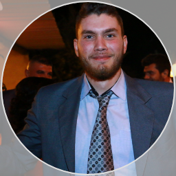

Byblos, Lebanon
Charbel Sakr
Full Stack Developer · IT Support & Systems Administration
I build backend, UI, any mid-to-advanced webapps using Javascript Frameworks, and their backends with php, Node.js, Python... — support history with Microsoft 365, staff PCs and networks, AI optimization for websites and webapp Ai-integration

About
Full Stack Development and IT support, under one roof
I started my career on the IT support and systems side — working on daily site reporting for the Janna Dam project, followed by office IT and accounting-system administration for Credit Trust in Beirut. Alongside my professional experience, I developed a strong foundation in IT development during university, where I studied programming, databases, systems, and software development. I also strengthened my development skills through a professional certification from the German technology education company Brainnest.
Since 2022, I've been responsible for systems administration and IT development for Mena THRC, an NGO in Byblos. My work has expanded well beyond traditional IT support: I design and develop web applications for collecting and managing organizational data, build database-driven systems and dashboards for monitoring KPIs, and automate workflows that turn raw data into useful operational information. I've built and continuously building forms and web applications for structured data gathering, as well as an end-to-end data management system that supports reporting, dashboards, and organizational decision-making.
I've also developed and maintained emergeinternational.org, building the organization's public-facing website, and created an internal inventory management web application for office equipment. The inventory system allows items to be registered, tracked, and identified through automatically generated QR codes, making it easier to manage physical assets and maintain accurate records.
This combination of IT administration and software development defines how I work today. I'm comfortable troubleshooting infrastructure and supporting users, but also designing databases, developing full-stack web applications, building data-management systems, creating dashboards and KPIs, and automating repetitive processes. I use modern development tools and AI-assisted tooling to accelerate development, improve system performance, and solve problems efficiently — connecting the technical side of IT with the operational needs of an organization.
Skills
What I work with
Web development
AI-assisted development
IT support & systems
Tools
Languages
- English
- Arabic
- French
- Spanish
Experience
Where I've worked
-
IT Support & Systems Administrator
Oct 2022 – PresentEmerge International (NGO) — Amchit
- Website developer
- Data Management system developer
- System administrator for the accounting system, Classe365, and Microsoft 365; manage the database
- Built and continue to maintain a custom web-based complex data management system for Emerge and inventory qrcode-based webapp for office items
- Front-end & back-end development: Javascript Frameworks - PHP - Python - Node.js
- Database Engineer
- Support staff PCs and network management; & Reporting, Dashboards and KPI
-
IT Support
Jun 2021 – 2022Credit Trust — Port, Beirut
- IT office support: software and equipment management
- Administered the ICBS accounting system for Banque du Liban
-
IT Support & Reporting
Jan 2017 – Jan 2021Consolidated Engineering and Trading Company — Janna
- Document control & daily site report officer with IT support
- Data Entry and office support
- CET and AG companies, Janna Dam construction office (Janna Dam Project, 2018–2021)
Education
Background
Bachelor's Degree in ITC
Arab Open University — Badaro May 2015 – Jun 2020
Information Technology & Computing: programming and technologies
Front-end Development — Industry Training Certificate
Brainnest
Contact
Let's talk
Open to Full Stack, IT support, and hybrid systems-administration roles. The fastest way to reach me is email or WhatsApp.